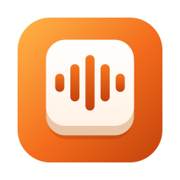

Bolkey
Speak. It's typed.
Hold Fn, speak Hindi, English or Hinglish, and it types where your cursor is. Hinglish comes out in Roman letters ("kal ki meeting postpone kar do").
Everything runs on your Mac. It works offline, and your voice never leaves the computer.
Bolkey
Large model · slightly better on English · blue
- Large Hinglish speech model (Whisper large-v3-turbo, fine-tuned)
- Text in about 0.3–0.6 s after you let go of Fn
- About 0.7 GB of memory while the model is loaded; it frees itself after 5 minutes idle
Bolkey Lite
Recommended · as accurate, 2–3 times faster · orange
- Small model (Whisper base size), fine-tuned on everyday Indian dictation, including fast speech and work acronyms
- Text in about 0.2 s after you let go of Fn
- About 130 MB of memory while the model is loaded; it frees itself after 5 minutes idle
- About a quarter fewer mistakes than the previous Lite in our tests
Which one should I get?
Since 0.2.6, Bolkey Lite is about as accurate as Bolkey: better on Hindi, 1.2 points behind on Indian English, and two to three times faster in an eighth of the download. Get Lite unless you mostly dictate English.
| Bolkey | Bolkey Lite | |
|---|---|---|
| Mistakes on Hindi speech (IndicVoices test, lower is better) | 13.8% | 13.1% |
| Mistakes on Indian English (Svarah test) | 26.7% | 27.9% |
| Text after you let go of Fn (MacBook Air M4) | 0.41–0.65 s | 0.18–0.25 s |
| Memory while the model is loaded | about 0.7 GB | about 130 MB |
| Download | 524 MB | 64 MB |
| Download link | Bolkey 0.2.6 | Bolkey Lite 0.2.6 |
Both measured the same way, with the apps' own settings (English and Hinglish, Roman letters), on public test sets of speakers neither model was trained on. Percentages are word or character error rates.
Needs a Mac with Apple Silicon (M1 or newer) and macOS 11 or later. Run one version at a time: both listen for the Fn key. The small glass pill on screen shows its waveform in the running version's colour: blue for Bolkey, orange for Bolkey Lite.
Android phones and tablets
Bolkey Lite for Android
Android 10 or later · phones from about 2019 on · orange
- A small orange bubble floats over your apps: hold it and speak, or tap it for hands-free. It types where your cursor is, in WhatsApp, Chrome, Gmail or anywhere else.
- Text in about half a second after you let go (Oppo Find X8); everything runs on the phone, with no internet permission at all.
- A setup guide walks you through the three permissions it needs, one at a time.
- Download the APK on your phone and open it. If Android asks, allow your browser to install unknown apps.
- Open Bolkey Lite and follow the setup guide: Microphone, Show the bubble over other apps, then Type for you (an Accessibility setting).
- If the Accessibility switch is greyed out, go to Settings → Apps → Bolkey Lite → ⋮ → Allow restricted settings and try again. Android does this for apps installed outside the Play Store.
- For the quickest response, allow Unrestricted battery use when Bolkey suggests it.
After typing, your last dictation stays on the clipboard: Android doesn't let apps restore what was there before.
Install on a Mac
- Open the downloaded .dmg and drag Bolkey onto the Applications folder.
- Open it. This preview is not notarized by Apple, so macOS blocks it the first time. Go to System Settings → Privacy & Security, scroll down and click Open Anyway.
- Bolkey opens a setup guide that walks you through what macOS needs, one step at a time: Accessibility (to hear the Fn key and type for you) and Microphone. Each step has a button to the right System Settings page and moves on by itself when done.
- If Fn opens the emoji picker, set System Settings → Keyboard → "Press 🌐 key to" to Do Nothing, or choose another key in Bolkey's Settings.
Bolkey lives in the small pill at the bottom of the screen and in the menu bar (a small keycap icon). Click the Bolkey app icon (in Applications, Launchpad or Spotlight) to open the Bolkey window:
- Home: how to dictate, how much you dictated today and this week, and your latest dictations.
- Notebook: every dictation, grouped by day, with search, Copy and Delete. It stays on your Mac.
- Settings: the dictation key (Fn, Right ⌥, Right ⌘ or your own shortcut), language, instant start, how soon to free memory, pill position and launch at login.
Right-click the pill (or click the menu-bar icon) for the quick menu, including Quit. On MacBooks with a notch the menu-bar icon can be hidden; the pill is always there.
Use
| Do this | What happens |
|---|---|
| Hold Fn, speak, release | The text is typed where your cursor is |
| Double-tap Fn | Hands-free: keep talking; press Fn or ■ to finish |
| Esc or ✕ | Cancel without typing |
| No text field focused | The text is copied to the clipboard and kept in the Notebook |
| Typing is blocked | The text stays on the clipboard; the pill says "Copied, press ⌘V" |
Privacy
Speech recognition runs on your Mac. Bolkey makes no network connections, keeps no recordings, and has no account or analytics.
Instant start (on by default) keeps the microphone open so the first word is never clipped: Bolkey holds the last quarter-second of sound in memory, overwritten continuously, and only uses it when you press Fn. macOS shows its microphone indicator while this is on. Turn it off in the menu bar ("Instant start") to open the mic only while you hold Fn.
Checksums (SHA-256)
6f923f2dbd99d2fd7af4f8864736d81edabb1776d76cd1377571f9db1311459a Bolkey-0.2.6-macOS-arm64.dmg 631203a9cb57a283152b9ac38a78a717b329b94b384f542db8d21d300e91dcdb Bolkey-Lite-0.2.6-macOS-arm64.dmg 359a1946bfcd5b71e8c3894f817a4960ba0237cfe2be6e76b0bbfcdc86f33356 Bolkey-Lite-0.2.6-android-arm64.apk
Check with shasum -a 256 <file>. Earlier versions are on the releases page.
Known limits of this preview
- Mac and Android for now. Windows and iPhone are planned.
- Android has Bolkey Lite only; the larger Bolkey model is too big and slow for phones today.
- Not notarized by Apple, so the first launch needs "Open Anyway".
- Bolkey Lite is 1.2 points behind Bolkey on Indian English; if you mostly dictate English, Bolkey is slightly better.